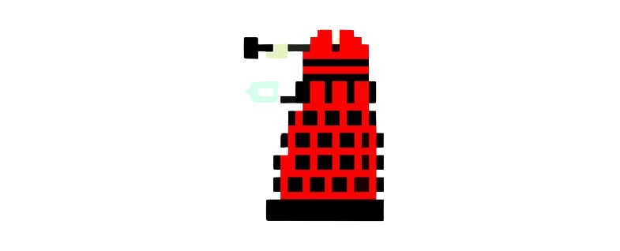
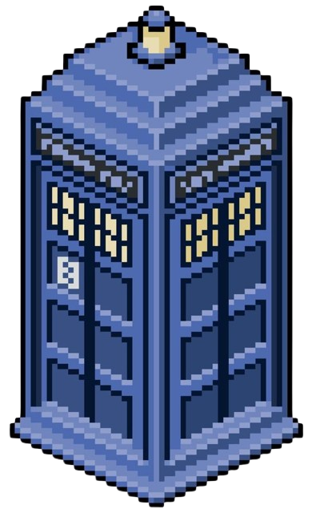
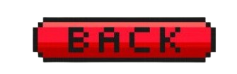

Daleks Invasion
Descrizione del Gioco
Daleks Invasion è un videogioco ispirato alla celebre serie televisiva britannica Doctor Who.
Il gioco trae ispirazione dalle battaglie del Dottore contro i Dalek

una delle razze aliene più iconiche della serie.
L'obiettivo del giocatore è controllare la navicella spaziale del Dottore, il TARDIS

e difendersi dagli attacchi dei Dalek, che si avvicinano progressivamente dall'alto dello schermo, contrattaccando a loro volta.
Controlli del Gioco
- Freccia Sinistra (←): Sposta la navicella verso sinistra.
- Freccia Destra (→): Sposta la navicella verso destra.
- Barra Spaziatrice: Spara un proiettile dalla navicella verso l'alto.
- Enter: Avvia il gioco dopo la schermata iniziale.
Tasti e Funzionalità nel Gioco
- Login: Avvia il gioco dopo aver inserito un nome utente già registrato nel database. Il nome utente sarà utilizzato per registrare il punteggio finale alla fine del gioco.
- Registrati: Premendo il tasto si accede ad un form di registrazione in cui, dopo aver inserito un nome utente e una password validi (nome utente non presente nel database e password di min. 8 caratteri, almeno 1 carattere speciale, almeno 1 numero, almeno una lettera maiuscola) é possibible registrarsi e poi tornare al login per accedere al gioco.
- Gioca di nuovo: Resetta il gioco e permette di ricominciare una nuova partita dopo il Game Over.
- Vedi classifica: Mostra la classifica con i punteggi più alti registrati dai giocatori, il loro nome utente, la posizione in classifica (se rientra tra le prime 10) e la data e l'ora in cui é avvenuta la partita
- Indietro: Permette di tornare indietro dalla schermata della classifica alla schermata di Game Over.
- Torna alla homepage: Permette di tornare indietro alla schermata iniziale del gioco.
Ispirazione
Il gioco trae ispirazione dal leggendario Space Invaders. Ho scelto di basarmi su questo titolo perché il suo concetto di difendersi da ondate di nemici si sposa perfettamente con l'universo di Doctor Who. Essendo un grande fan della serie, ho voluto renderle omaggio con questo progetto.
Come si Gioca
Una volta avviato il gioco, utilizza le frecce direzionali per muovere la navicella TARDIS a sinistra e a destra sullo schermo. Usa la barra spaziatrice per sparare proiettili verso i Dalek che si muovono verso di te dall'alto dello schermo. Il tuo obiettivo è distruggere tutti i Dalek prima che raggiungano la tua posizione.
Accumula 100 punti per ogni Dalek distrutto e cerca di battere il tuo punteggio massimo. Attenzione però ai colpi inviati dai daleks! Se non li eviterai perderai 50 punti e una volta arrivato sotto lo zero perderai il gioco!
